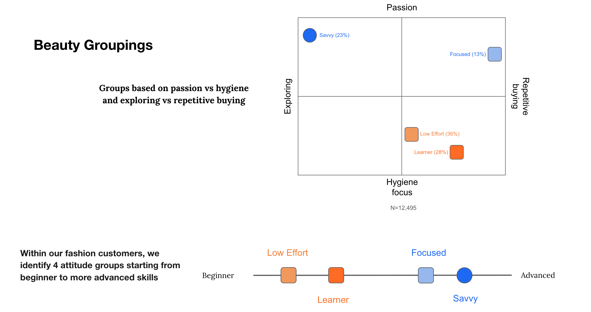

The challenge
The goal was to bring specific beauty audiences into focus, build shared understanding across teams, and support roadmap and prioritisation decisions.
Case 04 · Zalando
Zalando wanted to understand how its fashion customers relate to beauty: what they need, what they value, and which groups were worth prioritising as the business grew its beauty proposition.
The goal was to bring specific beauty audiences into focus, build shared understanding across teams, and support roadmap and prioritisation decisions.
I grounded a survey in a qualitative phase, ran cluster analysis on 12,495 fashion customers to define four need-based groups, then attached market share and profitability to each.
The Beauty team adopted the Savvy / Focused / Learner / Low Effort lens, connected to the existing fashion Portraits, and it fed into Zalando's broader beauty planning.

Segments are only useful to a business if you can tell which ones matter.
The full story
The summary above is the skim. Each section expands for the detail.
Zalando wanted to understand how its fashion customers relate to beauty: what they need, what they value, and which groups were worth prioritising as the business grew its beauty proposition. The goal was to bring specific audiences into focus, build shared understanding across teams, and support roadmap and prioritisation decisions.
This was a multi-researcher project. A qualitative phase, led by colleagues, ran 33 ninety-minute interviews across Germany and Spain to surface how customers think and feel about beauty. I owned the quantitative phase end to end: I designed the survey to verify and quantify what the interviews uncovered, ran the cluster analysis that defined the customer groups, layered in the market-share and profitability work, and delivered the quant readout.
The sequencing was the point. Rather than starting from a survey and hoping the questions were the right ones, the qualitative phase came first and did the discovery work, surfacing the tensions, motivations, and mental models that distinguish how customers relate to beauty. I used that output directly to ground the survey: the hypotheses the interviews raised became the structure of the questionnaire, so the quant phase was testing real, grounded ideas rather than guesses.
On the survey data (12,495 fashion customers), I ran a cluster analysis to find the natural groupings, then enriched those clusters with the rest of the survey to describe each one. Two dimensions did most of the work separating the groups: whether someone treats beauty as a passion or as hygiene, and whether they explore new products or buy the same things repeatedly.
That produced four need-based groups, Savvy, Focused, Learner, and Low Effort, ranging from highly engaged beauty explorers through to low-effort, hygiene-focused buyers. I mapped these against Zalando's existing fashion customer Portraits so the two segmentation systems could talk to each other.
Segments are only useful to a business if you can tell which ones matter. So I went beyond describing the groups and estimated each one's commercial weight, working with a data analyst for the onsite data and a market researcher for the funnel data.
I extrapolated group sizes across Zalando's adopted fashion customer base to approximate market share, and analysed profitability by group using order frequency, profit contribution (PCII), net merchandise volume (NMV), and customer value segments. The Savvy group, the most beauty-engaged, was also the most profitable, with the highest order frequency and value, while Low Effort was the least valuable. This made the groups actionable for the business: teams could see which customers to build for first, backed by their actual commercial value.
A survey incentivised by vouchers is unlikely to attract customers who don't care about beauty at all, or a purely premium-focused segment, so those groups are likely underrepresented.
On ethics, I noted the attitude-behaviour gap the interviews surfaced. Customers express strong feelings about cruelty-free and sustainability that don't always translate into purchases, so I was careful not to overstate those attitudes as reliable predictors of behaviour.
The Beauty team adopted the Savvy / Focused / Learner / Low Effort lens as a shared way to talk about beauty customers. I connected them to the existing fashion Portraits so teams could align around the same audiences. Attaching market share and profitability to each group meant teams could prioritise based on which groups were actually most valuable, and the work fed into Zalando's broader beauty planning.